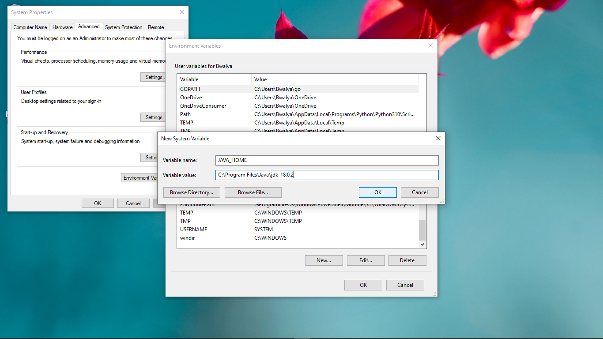
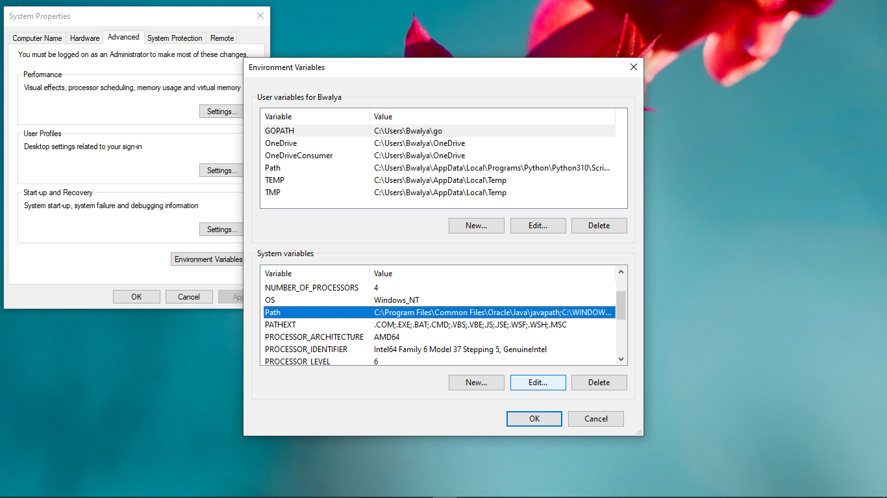
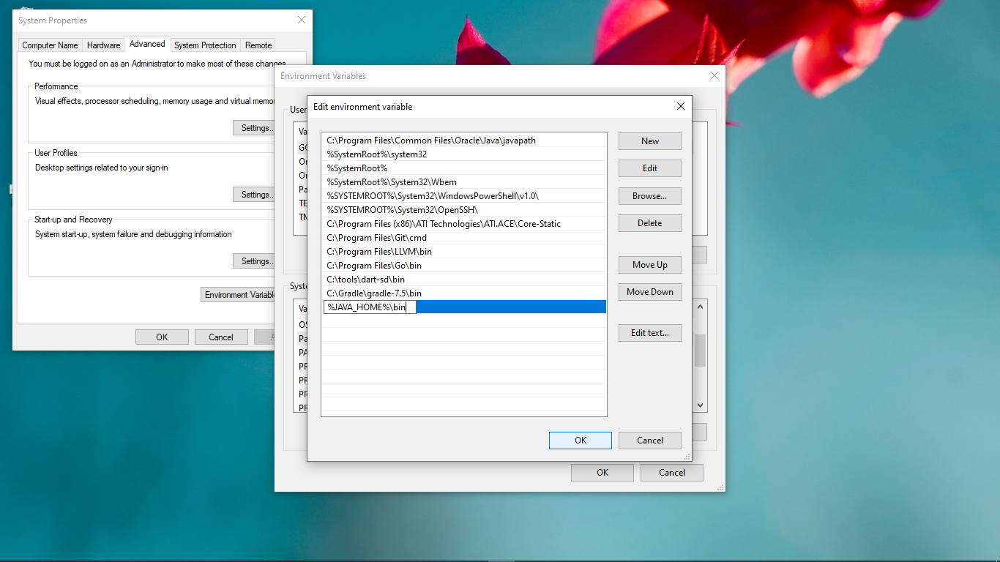

Java is a General Purpose, Object Oriented Programming Language. Java was originally developed by a Team lead by James Gosling at Sun Microsystems (which was acquired by Oracle Inc).
Here is some of the uses of Java.
To develop and run Java programs locally on your computer, you'll need to install the Java Development Kit (JDK). Download the JDK for the OS you're using from www.oracle.com/java/technologies/downloads/
On Windows, after Installation you'll need to add the JDK to the Environment Variables. Click Windows + S to open the Search window.Type env,Click Edit the system environment variables
Click Environment Variables. On System variables add a new variable with variable name = JAVA_HOME and variable value = path/to/jdk-version folder. Click OK. Under System Variables, select Path, then click Edit.
Add a new entry %JAVA_HOME%\bin. Click OK to save.
On each window that was opened, click Apply or OK to dismiss it and apply the changes.
In a terminal window, type java -version then Enter to check if Java was installed and
configured correctly.
public class Main {
public static void main(String[] args) {
System.out.println("Hello world!");
}
}
Using simple text or code editor, create a file with .java as the file extention and write the sample code. The class name must match the file name.
We need to compile the source code file to a .class file which is then run.
Open a terminal window in the directory where the source file is and run
To run the program, run
Everytime you make changes to the source code file, remember to recompile your code.
Alternatively, you can use an IDE like Eclipse or IntelliJpackagepublicclass Java is srictly object orinted, every application begins with a class.
{} The curly brackets marks the beginning and the end of a block of code.public static void main(String[] args) - The main method is the program execution
starting point, it takes an array of strings as its argument.// single line comments/* *multi-line comments */
System.out.println() - prints anything passed to it to the console.; semi colon are required statement terminator.